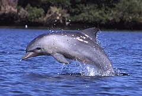
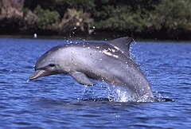

참고자료 : 병코돌고래
 큰돌고래속(Tursiops) 또는 병코돌고래속은 이빨고래소목참돌고래과에 속하는 고래 속의 일종이다. 병코돌고래속은 큰돌고래(T. truncatus, 병코돌고래 또는 커먼돌고래)와 남방큰돌고래(T. aduncus, 인도태평양병코돌고래) 그리고 부르난큰돌고래(T. australis)의 3종으로 이루어져 있다.
귀여운 외모로 사랑받는 병코돌고래가 실제로 ‘미소’를 지을 수 있다는 내용의 연구결과가 나왔다고 영국 BBC 등 외신이 3일(이하 현지시간) 보도했다.
이탈리아 피사대학 연구진은 병코 돌고래 22마리가 조련사와 함께 있는 모습을 분석한 결과, 병코돌고래는 ‘친구’들과 놀이시간을 가질 때 의사소통을 위해 미소와 비슷한 입을 벌리는 표정을 짓는다는 사실을 확인했다.
다른 병코돌고래가 시야에 있을 때에는 거의 대부분 ‘웃는’ 얼굴 표정을 지었지만, 사람(조련사) 등과 함께 있거나 홀로 있을 때에는 이러한 표정이 나오지 않았다.
또 다른 병코돌고래가 자신의 시야에 있을뿐만 아니라 얼굴을 마주볼 수 있을 때에는 미소짓는 표정을 더욱 자주 사용하는 것으로 확인됐다.
구체적으로 홀로 놀 때에는 입을 벌리는 행동이 단 한 차례만 기록됐지만, 다른 돌고래와 함께 있을 때에는 1288번의 ‘미소’를 보였으며, 이중 92%는 돌고래와 돌고래가 함께 놀 때 나타났다.
연구를 이끈 엘리자베타 팔라
피사대학①
진화생물학자는
원숭이의 장난기 어린
얼굴이나 인간의 웃음
표정에서 볼 수 있는 ‘느슨히
벌어진 입’은
바보같지만 장난을
칠 때 나오는 보편적인
신호
라면서
이러한 신호는 동물이 인간과
놀 때 즐거움을 표현하는 한편
갈등을 피하게 하는데 도움이
된다
고 설명했다.
이어
돌고래의 이런 표정은 미어캣
또는 말레이곰에게서도 볼 수
있다
면서
병코돌고래의 미소짓는
표정은 의사소통의 방식
이라고 덧붙였다.
병코돌고래는 무리지어 생활하며 사회적 능력이 뛰어난 해양 동물로 알려져 있다. 물쩜장을 포함해 복잡한 상호작용을 할 줄 아는 것으로 유명하다.
연구진은
이번 연구를 통해 돌고래가
다른 돌고래의 얼굴 표정을
따라할 수 있다는 것을
알게됐다
면서
입을 벌리는 신호는
돌고래뿐만 아니라 많은
종(種)의 동물 사이에서
복잡한 사회적 상호작용을
형성하는데 중요한 역할을
했다는 것을 시사한다
고 전했다.
이어 “이번 연구에서는 돌고래의 음향신호를 따로 기록하지 않았다. 향후에는 놀이적 상호작용 시간 동안 발성과 촉각 신호가 어떤 역할을 하는 지 탐구해야 할 것”이라고 덧붙였다.
이번 연구결과는 저명한 국제학술지 셀(Cell)의 자매지인 아이사이언스(iScience) 최신호에 실렸다.
한편, 병코돌고래는 고래하목 참돌고래과에 속하는 돌고래로, ‘큰 돌고래’라고 부르기도 한다. 몸길이는 4m, 몸무게는 300kg에 달하며 극지방을 제외한 거의 모든 온대 바다와 열대 바다에서 볼 수 있다.
일반적으로 15~20마리로 이뤄진 무리가 함께 생활하는데, 종종 1000여 마리로 이루어진 무리를 짓기도 한다. 주로 작은 물고기나 갑각류, 오징어 등이 먹잇감이다.
여러 연구를 통해 병코돌고래의 뇌가 인간보다 크고, 학습 능력 또한 다른 야생동물에 비해 월등하다는 사실이 증명된 바 있다.
우리나라대한민국만세 큰돌고래속(Tursiops) 또는 병코돌고래속은 이빨고래소목참돌고래과에 속하는 고래 속의 일종이다. 병코돌고래속은 큰돌고래(T. truncatus, 병코돌고래 또는 커먼돌고래)와 남방큰돌고래(T. aduncus, 인도태평양병코돌고래) 그리고 부르난큰돌고래(T. australis)의 3종으로 이루어져 있다.
① 피사대학 : 피사는 이탈리아 토스카나주에 있는 도시이다. 피사도의 현청 소재지이며, 시의 인구는 약 9만명이다. 예로부터 문예의 중심지로 번창했으며, 갈릴레오 갈릴레이도 이 곳의 대학에서 공부하였다.
| 1 | "1년만 다녀도 22개월 위로금"…엔씨 희망퇴직 '파격적' | |
| 2 | 화재 경보 96%가 오작동…불필요한 소방 신고 줄일 'AI 센서' 나왔다 | |
| 3 | 엔비디아 "카카오 AI 전환 지원…데이터센터도 협업" |